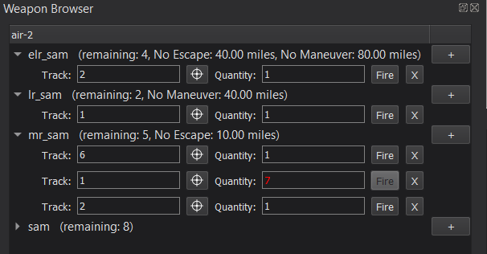

Weapon Browser - Warlock¶
The Weapon Browser provides an interface for viewing and firing explicit weapons at tracks. When the Weapon Browser is enabled, there will be a drop-down menu for each weapon stored on the platform, as well as an indicator for the quantity of weapons remaining. The weapon type can be viewed by hovering the mouse over the weapon name. Remote tracks can also be engaged via an xio_interface.
To “command” a weapon to fire, select the “+” button next to the weapon name, then enter a valid track and quantity. A track can be selected either by entering a number in the associated track box or by using the provided selector tool. If the specified track does not exist, clicking Fire will display a warning, but the command will still be consumed. The quantity can be selected by editing the associated quantity box. When there is an invalid quantity in the command, the text will turn red and the Fire button will be disabled. Commands are stored by platform, so even if a new platform is selected, when the original platform is re-selected, all of its commands will still be in the dialog. Commands can be added/deleted as necessary.
Note
If simultaneous weapon commands are required, make sure to increase the maximum_request_count accordingly. Otherwise, if a Fire command for a specified platform is issued while explicit weapons are still being generated for an existing command (for example, during the delay associated with the FireSalvo script function), AFSIM may ignore the command and fail to fire. To guarantee a command is successful, either increase the maximum_request_count or wait for any existing commands for the specified platform to complete prior to pressing Fire.
The Weapon Browser also shows the No-Escape and No-Maneuver ranges for the weapon. This data is set via the aux_data command. The values required to see this information are double values called “NO_ESCAPE_FT” and “NO_MANEUVER_FT” respectively. Since aux_data does not contain units, these values should be set in feet. The Weapon Browser will convert from feet to the desired length unit defined in Preferences. If these values are not set, they will not be displayed.
weapon example_weapon WSF_EXPLICIT_WEAPON
...
aux_data
double NO_ESCAPE_FT = 1000 // value in feet
double NO_MANEUVER_FT = 2500 // value in feet
end_aux_data
end_weapon